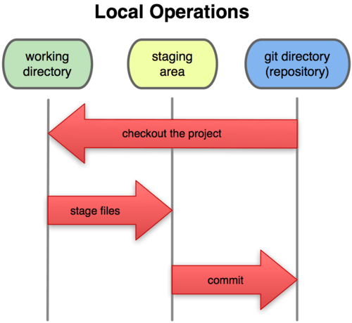
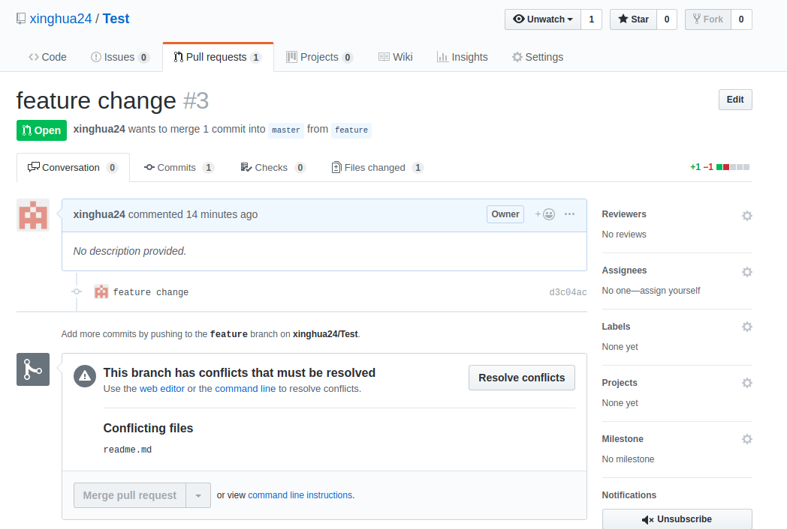

Git Introduction
Core Concept
The Three areas
- Working Tree - files you are currently working on. It is a tree because it implies the entire directory structure. It is used to be called ‘working directory’ until git v2.9.
- Index - contains changes about what will go into the next commit. Technical name in Git is “index”. It is called “Staging Area” sometimes.
- Repository(.git folder) - where git stores the metadata and object database for the project.

Working directory, staging area, and Git directory. Image from [https://git-scm.com/book/en/v1/Getting-Started-Git-Basics](https://git-scm.com/book/en/v1/Getting-Started-Git-Basics)HEAD - This is a pointer normally points to a named branch(e.g. master). When we use a checkout command to checkout
a specific commit, HEAD is in Detached state.
Tilde vs caret
- HEAD^ - first parent of HEAD. same as HEAD^1.
- HEAD^2 - second parent of HEAD.
- HEAD^^ - first parent of the first parent of HEAD. Not the same as HEAD^2. Equivalent of HEAD~2.
see Tilde vs caret
Basic Commands
These are the most commonly used commands.
1 | # create a git repo |
Config
The global configuration can be manually modified in ~/.gitconfig
1 | git config --global user.name 'First Last' |
Line Ending Conversions
There are 3 config options regarding how git handles line ending conversions.
- Checkout Windows-style, commit Unix-style line endings. Git converts LF to CRLF when checking out text files. Recommended for windows. (“core.autocrlf” is set to “true”)
- Checkout as-is, commit Unix-style line endings. Recommended for Unix. (“core.autocrlf” is set to “input”)
- Checkout as-is, commit as-is. Not recommended for cross-platform projects. (“core.autocrlf” is set to “false”)
if “core.autocrlf” is set to “input”, a warning will be displayed when adding text files to index in Windows.
1 | warning: CRLF will be replaced by LF in foo.txt. |
Set “safecrlf” to be “false” to hide the warning message. So these two commands can go together.
1 | git config --global core.autocrlf input |
Git checkout
Most common use is to switch branch. Can also be used to revert file to a commit or restore file.
1 | # switch branch |
Back out uncommitted Changes
git-reset - Reset current HEAD to the specified state. --hard flag resets the index and working tree. --soft flag doesn’t touch the idnex file or the working tree at all.
1 | # back out all the changes since last commit, staged or not. |
git reset --hard is the most commonly used command to undo uncommitted changes.
Reset to a Commit
If you haven’t push the commit, you can fix the commit locally. DO NOT use these command if you have already pushed the changes.
1 | # reset to the target commit. Both change in the working tree and the index will be kept |
Revert a Pushed Commit
Revert will create new commits to undo the previous commit. git revert require your working tree to be clean.
If you want to throw away all uncommitted changes in your working directory, you should see git-reset instead.
To revert a pushed commit, first get the commit ID
1 | git log --oneline |
Then execute git revert commit-id to revert the commit. This will create a commit that undos the commit to be revert.
Here is the result after a commit is reverted.
1 | cbfbf02 (HEAD -> dev) Revert "bad commit" |
Upstream
The term upstream and downstream refers to the repository. Generally, upstream is from where you clone the repository, and downstream is any project that integrates your work with other works.
set the upstream when pushing a new local branch
1 | git push -u origin new-branch |
You can set the upstream for an existing branch
1 | git branch --set-upstream-to=origin/some-branch some-branch |
You can also unset a upstream
1 | git branch --unset-upstream |
find out which remote branch a local branch is tracking
1 | git branch -vv |
Reference:
Remote
1 | # show remote URLs |
Branching & Merge
1 | # show local branches. * points to the branch that is checked out |
Fetch and Pull
1 | # fetch - only download all branches from remote, do not merge |
Push
1 | # push a new branch to remote. -u is short for --set-upstream |
If the current branch only exist in local and not in remote, then the following error will occur. In this case,
Use -u or --set-upstream flag to set the up stream.
1 | fatal: The current branch master has no upstream branch. |
Rebase
git rebase - Reapply commits on top of another base tip.
1 | # this command only make change in the current branch. The branch from parameter is not changed |
Diff
most common commands are git diff and git diff –cached
1 | # you can use 'difftool' instead of 'diff' if 'tool.diff' is setup |
Stash
Stash - Use git stash when you want to record the current state of the working tree and the index, but want to go back to a clean working tree.
Ref Doc: https://git-scm.com/docs/git-stash.
One way to use Stash is to stash before running git pull command. after pull is completed,
run git stash apply. this way no merge conflict will occur when pulling files from remote.
1 | # save a stash |
Subtree
Git subtree allows one repository to exist inside the parent repository as a sub-directory. Useful for maintaining sub-project.
1 | # Add subtree |
The main drawback for subtree is you have to specify the directory path for every push/pull.
Reference
.gitignore
The rules for the patterns you can put in the .gitignore file are as follows:
- Blank lines or lines starting with # are ignored.
- Standard glob patterns work, and will be applied recursively throughout the entire working tree.
- You can start patterns with a forward slash (/) to avoid recursivity.
- You can end patterns with a forward slash (/) to specify a directory.
- You can negate a pattern by starting it with an exclamation point (!).
Example .gitignore file:
1 | # ignore all .a files |
More on .gitignore
Gitflow
Gitflow is a popular branching model for Git. it was introduced by Vincent Driessen.
There are two main branches
- master - branch that is always production-ready and contains the last release version fo source code in production
- develop - reflects the development changes. This is where feature branches merges to.
Other branches
- feature - derive from develop branch. used to develop features. Merged to develop branch.
- release - derived from develop branch that is used for release. merged to master and develop. release is merged to develop branch so that important updates is not lost. After the merge, release branch can be deleted.
- hotfix - derived from master branch. It is used to fix a bug in production. It is merged to master and develop branch like the release branch.
 Author: Vincent Driessen
Author: Vincent Driessen
For more details on Gitflow, see Gitflow workflow by Atlassian
For a practical example of Gitflow workflow, see Git Flow Workflow
Other Stuffs
Other Commands
1 | # show files being tracked |
git push -u flag
When you create a local branch and then push it to the remote repository. You can add a -u flag when doing a git push. It adds a tracking reference to the upstream you are pushing to. There is a ‘link’ between local and remote branch. So when you do a git pull without any argument, git will fetch and update local branch. If you do it without -u flag, local branch will not keep track of the change in the remote repository.
-u flag is the same as –set-upstream.
Example
1 | git push -u origin new-branch |
For every branch that is up to date or successfully pushed, add upstream (tracking) reference, used by argument-less git-pull and other commands.
Cherry-Pick
Apply the commit from other branch to the current branch. see Documentation.
If there are multiple commits to cherry-pick, apply the older ones first.
usage:
1 | git cherry-pick <commit sha1>... |
Alias
Sometimes it is convenient to create alias in ~/.bashrc for git commands.
1 | alias gac="git add . && git commit -m" |
Resolving the conflict between Git branches
Pull Request with conflict:

The following steps will resolve conflict regardless if Pull Request is created or not.
Assuming
- Destination branch is master
- Source branch is feature
pull the latest changes from destination branch
1
2git checkout master
git pullmake sure you are on the source branch(feature in this case). pull if necessary
1
2git checkout feature
git pullmerge branch master into feature
1
git merge master
resolve the conflicts
commit the change and push
1
2
3git add .
git commit
git push
Reference: